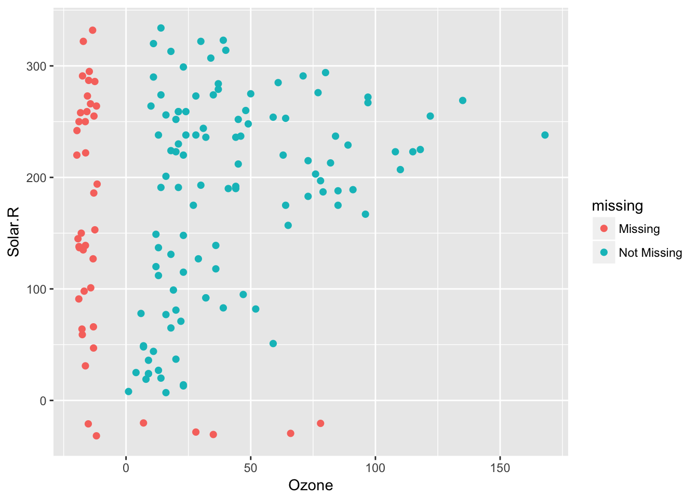
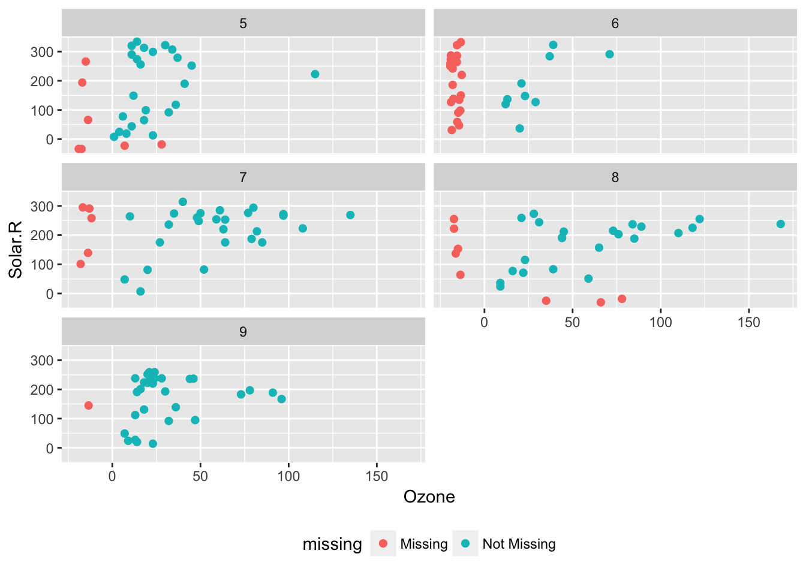
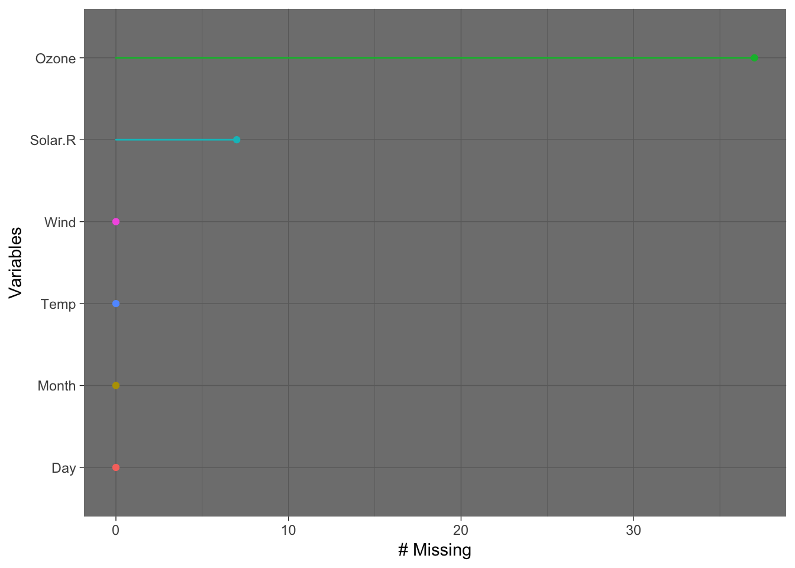

naniar aims to make it easy to summarise, visualise, and manipulate missing data with minimal deviations from the workflows in ggplot2 and tidy data.
Currently it provides:
- Data structures for missing data, e.g.,
bind_shadow() - Handy shorthand summaries for missing data: e.g.,
n_miss(),n_complete,prop_miss(),prop_complete. - Numerical summaries of missing data: e.g.,
miss_case_summary(),miss_case_table(),miss_var_pct(),miss_var_summary(),miss_var_run. - Visualisation methods: e.g.,
geom_miss_point(),gg_miss_var(),
For details on all of these functions and how to use each of them, you can read the vignette “Getting Started with naniar”. There is also a Gallery of missing data visualisations using naniar.
Installation
Currently naniar is only available on github
# install.packages("devtools")
devtools::install_github("njtierney/naniar")Visualisating missing data?
Visualising missing data might sound a little strange - how do you visualise something that is not there? One approach to visualising missing data comes from ggobi and manet, where we replace “NA” values with values 10% lower than the minimum value in that variable. This is provided with the geom_miss_point() ggplot2 geom, which we can illustrate by exploring the relationship between Ozone and Solar radiation from the airquality dataset.
library(ggplot2)
ggplot(data = airquality,
aes(x = Ozone,
y = Solar.R)) +
geom_point()
#> Warning: Removed 42 rows containing missing values (geom_point).
ggplot2 does not handle these missing values, and we get a warning message about the missing values.
We can instead use the geom_miss_point() to display the missing data
library(naniar)
ggplot(data = airquality,
aes(x = Ozone,
y = Solar.R)) +
geom_miss_point()
geom_miss_point() has shifted the missing values to now be 10% below the minimum value. The missing values are a different colour so that missingness becomes pre-attentive.
We can also add features such as faceting, just like any regular ggplot plot.
p1 <-
ggplot(data = airquality,
aes(x = Ozone,
y = Solar.R)) +
geom_miss_point() +
facet_wrap(~Month, ncol = 2) +
theme(legend.position = "bottom")
p1
Other visualisation tools
You can also look at the proportion of missings in each variable with gg_miss_var:
gg_miss_var(airquality)
The plots created with the gg_miss family all have a basic theme, but you can customise them, just like usual ggplot objects. If you call any ggplot customisation functions with a gg_miss object, the default args will be overridden.
gg_miss_var(airquality) + theme_dark()
gg_miss_var(airquality) + labs(y = "Look at all the missing ones")
Handy helpers for missing data
Users may be aware that you can find the number of missings in a structure using sum(is.na(x)), or find the proportion of missings with mean(is.na(x)). to make this is a bit easier to think about and reason with, we introduce more intuitive helpers:
-
n_miss()/n_complete()return the number of missings or complete values -
prop_miss()/prop_complete()return the proportion of missing or complete values. -
pct_miss()/pct_complete()likewise return the percentage of missing or complete values.
Numerical summaries for missing data
naniar provides numerical summaries of missing data starting with miss_. Summaries focussing on variables or a single selected variable, start with miss_var_, and summaries for cases (the initial collected row order of the data), they start with miss_case_. All of these functions also “just work” with dplyr’s group_by().
For example, we can look at the number and percent of missings in each case and variable with miss_var_summary(), and miss_case_summary(), which both return output ordered by the number of missing values.
miss_var_summary(airquality)
#> # A tibble: 6 x 3
#> variable n_missing percent
#> <chr> <int> <dbl>
#> 1 Ozone 37 24.183007
#> 2 Solar.R 7 4.575163
#> 3 Wind 0 0.000000
#> 4 Temp 0 0.000000
#> 5 Month 0 0.000000
#> 6 Day 0 0.000000
miss_case_summary(airquality)
#> # A tibble: 153 x 3
#> case n_missing percent
#> <int> <int> <dbl>
#> 1 5 2 33.33333
#> 2 27 2 33.33333
#> 3 6 1 16.66667
#> 4 10 1 16.66667
#> 5 11 1 16.66667
#> 6 25 1 16.66667
#> 7 26 1 16.66667
#> 8 32 1 16.66667
#> 9 33 1 16.66667
#> 10 34 1 16.66667
#> # ... with 143 more rowsYou could also group_by() to work out the number of missings in each variable across the levels within it.
library(dplyr)
#>
#> Attaching package: 'dplyr'
#> The following objects are masked from 'package:stats':
#>
#> filter, lag
#> The following objects are masked from 'package:base':
#>
#> intersect, setdiff, setequal, union
airquality %>%
group_by(Month) %>%
miss_var_summary()
#> # A tibble: 25 x 4
#> Month variable n_missing percent
#> <int> <chr> <int> <dbl>
#> 1 5 Ozone 5 16.12903
#> 2 5 Solar.R 4 12.90323
#> 3 5 Wind 0 0.00000
#> 4 5 Temp 0 0.00000
#> 5 5 Day 0 0.00000
#> 6 6 Ozone 21 70.00000
#> 7 6 Solar.R 0 0.00000
#> 8 6 Wind 0 0.00000
#> 9 6 Temp 0 0.00000
#> 10 6 Day 0 0.00000
#> # ... with 15 more rowsTo find the percent missing variables and cases:
# Proportion of variables that contain any missing values
miss_var_pct(airquality)
#> [1] 33.33333
# Proportion of cases that contain any missing values
miss_case_pct(airquality)
#> [1] 27.45098
# Proportion elements in dataset that contains missing values
prop_miss(airquality)
#> [1] 0.04793028Contributions
Please note that this project is released with a Contributor Code of Conduct. By participating in this project you agree to abide by its terms.
A note on the name
Why naniar?
naniar was previously named ggmissing and initially provided a ggplot geom and some other visualisations. ggmissing was changed to naniar to reflect the fact that this package is going to be bigger in scope, and is not just related to ggplot2. Specifically, the package is designed to provide a suite of tools for generating visualisations of missing values and imputations, manipulate, and summarise missing data.
…But why
naniar?
Well, I think it is useful to think of missing values in data being like this other dimension, perhaps like C.S. Lewis’s Narnia - a different world, hidden away. You go inside, and sometimes it seems like you’ve spent no time in there but time has passed very quickly, or the opposite. Also, NAniar = na in r, and if you so desire, naniar may sound like “noneoya” in an nz/aussie accent. Full credit to @MilesMcbain for the name, and @Hadley for the rearranged spelling.
Future Work
Other plans to extend the geom_miss_ family to include:
- Categorical variables
- Bivariate plots: scatterplots, density overlays
- SQL translation for databases
- Big Data tools (sparklyr, sparklingwater)
- Work well with other imputation engines / processes
- Provide tools for assessing goodness of fit for classical approaches of MCAR, MAR, and MNAR (graphical inference from
nullaborpackage) - Expand ggplot
geom_miss_*family
Acknowledgements
Firstly, thanks to @dicook for giving the initial inspiration for the package and laying down the rich theory and literature that the work in naniar is built upon. Naming credit (once again!) goes to @MilesMcBain. Among various other things, Miles also worked out how to overload the missing data and make it work as a geom. Thanks also to Colin Fay @colinfay for helping me understand tidy evaluation and for features such as replace_to_na, miss_*_cumsum, and more.